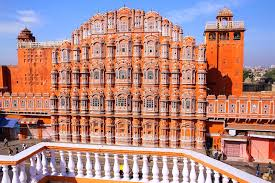
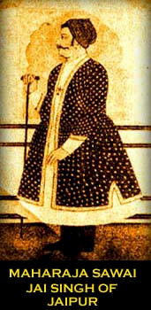
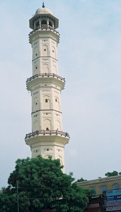

ABOUT JAIPUR
Rajasthan's
beautiful Pink City Jaipur, was the stronghold of a clan of rulers whose three
hill forts and series of palaces in the city areimportant attractions. Known as
the Pink City because of the colour of the stone used exclusively in the walled
city, Jaipur's bazaars sell embroidered leather shoes, blue pottery, tie and dye
scarves and other exotic wares. Western Rajasthan itself forms a convenient
circuit, in the heart of the Thar desert which has shaped its history,
lifestyles and architecture.
Founded in AD 1727 by Sawai Jaisingh II, Jaipur the capital of Rajasthan is
popularly known as the Pink City with broad avenues and spacious gardens. The
capital of Rajasthan, Jaipur is steeped in history and culture. Here the past
comes alive in magnificent forts and palaces, blushed pink, where once lived the
maharajas. The bustling bazaars of Jaipur, famous for Rajasthani jewellery,
fabric and shoes, possess a timeless quality and are surely a treasure-trove for
the shoppers. This fascinating city with its romantic charm takes you to an
epoch of royalty and tradition.
Jaipur has been laid according to the conventional nine-grid pattern that
astrologers believe to be lucky, and which has been recommended in the ancient
Indian treatise on architecture. Each grid consists of a square, and these have
been planned so that, at the heart of the city is the City Palace. Spread around
it, in rows, are public buildings, the residences of noblemen, the living and
trading quarters of merchants and artisans. Straight, wide roads run through the
city, while a high, crenellated wall that forms its defense is pierced with
seven gateways that serve as entry points. Today, these walls may be more
difficult to spot since the city has grown far beyond its original plan, but
they are still there, proof that though Jaipur saw no great siege, it was more
than adequately prepared for it.
Jaipur architectural planning may have been ancient, but its execution was
definitely modern. Best represented by the City Palace complex, it brought
together all that was excellent in Rajput and Mughal architecture, creating a
new tradition that found wide currency over much of north India. As in the
Mughal tradition, the durbar or court areas became much more open, characterised
by a series of arched pavilions held on delicately crafted pillars.
Ornamentation had always been a part of the state architectural heritage, now
it became much more opulent. The private wings of the family also extended their
entertainment areas. Since defence was no longer a primary concern, larger, more
ornamental windows were built to over look the streets or courtyards outside
these wings. Gardens were no longer planned within the internal courtyards only,
but were added to the external vistas, and water, a basic feature of Mughal
palaces and gardens, was utilised in a similar fashion, in canals and fountains.

Jaipur has much to offer visitors everything from pageants and festivals to
extraordinarily clad people, a wealth of handicrafts, a royal legacy of palaces,
and sightseeing that will occupy their time. However, should the visitors
simply choose to walk around the streets of the old city instead, they will not
regret it. All of Jaipur is an architectural gem, and no scheduled sight seeing
can even hope to do justice to this rare city.